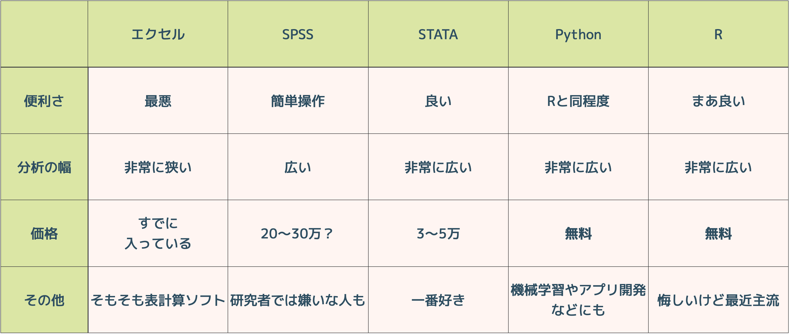

1 + 1[1] 2Rは，統計分析に強みを持つコンピュータ言語です（統計ソフトと呼ぶこともあるけど，厳密な違いはよくわかりません）。
エクセルでもある程度の分析はできますが，覚えさえすればエクセルよりもはるかに簡単です。また，エクセルでできる分析は限られていますが，Rではそれよりもはるかに高度なことができます。また，エクセルはそもそも表計算ソフトです。データが簡単にいじれてしまう（書き換えられてしまう）状態で分析作業をするのは好ましくありません。
なんといってもフリーです。個人のコンピューター（職場が許すのであれば職場のコンピューターにも）にダウンロードすれば，卒業後も使えます。対してIBM社のSPSSは非常に高額です。研究者にでもならない限り個人で購入することはないでしょうし，職場で予算を取ることも難しいかもしれません。
機械学習との絡みでPythonが流行ってきています。ただ，統計分析に関してはRに一日の長があるという印象です。Pythonはなんでも出来るけど，統計分析部分の操作性・拡張性はRの方が良さそう。
コンピュータ言語のとっかかりはRでも，Rを使えるようになったらPythonもそこまで負担なく覚えられるでしょう。

Posit社の提供する統合開発環境（IDE）。RはそれだけだとWindowsのconsoleとか，Macのterminalみたいな，コマンドだけの画面

これで使えないわけでもなけれど，もっと使いやすい方が良い。Rをもっと使いやすい状態にしてくれるアプリがRstudioです。
Rの画面（左下）
Rのプログラムを書くスペース（左上）
読み込んだデータや，過去に実行したコマンドが見れるスペース（右上）
パッケージやファイル，作った図表などがみれるスペース（右下）

Rstudioを使うと，分析結果レポートを文書やプレゼン用スライドに直接書き出すこともできます。
文献リストの挿入などの機能も実装できるので，その気になればデータ分析から論文執筆まで全てRstudioでできます。
Google colabなど，他の開発環境もありますが，インストールさえしてしまえば，Rstudioの方が便利だと思います。
Windowsなら Download R for Windows
MacならDownload R for macOS
R-X.X.X-arm64.pkg，IntelならR-X.X.X.pkgX.X.X という部分はバージョン番号です。
Rなどの統計ソフトを使う利点の一つは，再現性です。例えばエクセルでは，どんな順番にどんな処理をしたのかは記録されません。Rなどのプログラミングソフトを使うと，操作した内容と順番をコードの形で記録しておけます。コードを記録したファイルを「スクリプトファイル」と言います。
スクリプトファイルは，画面左上にある緑の「＋」アイコンを押して，「R Script」を選択することで新規作成できます。

スクリプトファイルを作成すると（初期状態では）画面の左上に白紙のファイルが出てきます。ここにコマンドを打ち込んでいきます。例えば以下のコマンドを打つと，画面の左下にあるRの画面に実行結果が出ます。
1 + 1[1] 2左下の画面（console）に直接 1+1 と打ち込んでも同じ結果が出ますが，後で記録に残らないので，コードはスクリプト画面に書く，左下は結果の表示だけ，と使い分けた方が良いです。

Rスクリプトに以下の内容を打ち込んでください。スクリプト右上のRunボタンを押すか，Control + Enter (Macの場合は⌘+Enter)で実行してください。
1+3 #足し算[1] 42*4 #掛け算[1] 8#変数を先に定義して，計算。printで表示
x = 3
y = 5
z = x * y
print(z)[1] 15このパートは森知晴先生（立命館大学総合心理学部）のサイト (卒業論文のためのR入門) 及び今井耕介先生（Harvard University / 東京大学）の著書 (社会科学のためのデータ分析入門)等を参考にしています。
Rでは情報を自分で名前をつけたオブジェクトとして保存できます。Rstudioでは，保存されたオブジェクトは右上のEnvironmentと言うところに表示されます。
x <- 1「<-」の左はオブジェクト，右はその中身を表します。なので，「xという名前のオブジェクトに1を入れる」という指示をしています。これを実行すると画面右上にxというオブジェクトが表示されるはずです。xの中身を確認するには，そのオブジェクトの名前（今回の場合x）を打つと良いです。
x[1] 1文字列でもオブジェクトになります。
univ <- "Ritsumeikan University"
univ[1] "Ritsumeikan University"複数の数値の並び（ベクトル）をオブジェクトとすることもできます。
vec <- c(1, 2, 3, 4, 5)縦×横の行列も作れます。matrixという名前です。ncol=2は列の数, byrow=TRUEは，横に並べるということ。
mat <- matrix(c(435,165,265,135), ncol=2, byrow=TRUE)
mat [,1] [,2]
[1,] 435 165
[2,] 265 135例えばbyrow=FALSE にすると縦に並ぶ
mat2 <- matrix(c(435,165,265,135), ncol=2, byrow=FALSE)
mat2 [,1] [,2]
[1,] 435 265
[2,] 165 135縦横の名前をつけると
rownames(mat) <- c("行1", "行2")
colnames(mat)<- c("列1", "列2")
mat 列1 列2
行1 435 165
行2 265 135オブジェクトの中で重要な形式として，データフレームがあります。これは，縦方向に観測値を、横方向に変数を並べたデータを言います。
age <- c(18, 21, 22, 23, 34) #年齢のベクトル
gender <- c("female", "male", "male", "female", "female")#性別のベクトル
dframe <- data.frame(age, gender)
dframe age gender
1 18 female
2 21 male
3 22 male
4 23 female
5 34 femaleエクセル等のデータを読み込んで分析する場合は，このデータフレーム形式です。
データフレームの中の特定の行を指定する場合は，「データフレーム名$列名」
dframe$gender[1] "female" "male" "male" "female" "female"簡単な計算は，以下の通り
1+1 [1] 22*6 #掛け算は*[1] 122^4 #累乗は^[1] 16sqrt(16) #ルートはsqrt()[1] 4Rを使う上で最も重要。何がしかの命令をすると，何かの結果が返ってくる。
mean(dframe$age) #平均はmean[1] 23.6min(dframe$age) #最小値（最大値）はmin(max)[1] 18median(dframe$age) #中央値はmedian[1] 22上にあるように，Rのコマンドは基本的には，やること(実行する対象)という構造になっている。
mean(dframe$age)は，
やることが平均(mean)
対象がデータフレームdframeのなかのage (dframe$age)
Rではかっこ()やコンマ（,）の後など，コードの切れ目で開業しても動作します。特に()何重にもなる場合，改行したほうが見やすいかもしれません。例えば，上でやった行列の作成コマンド
mat <- matrix(c(435,165,265,135), ncol=2, byrow=TRUE)は，以下のように書いても全く同じように動作します。
mat <- matrix(
c(435,165,265,135),
ncol=2,
byrow=TRUE
)これでも同じですが，あまり改行しすぎるのもかえって読みにくいかもしれません。自分が見やすいように程よく改行してください。
mat <-
matrix(
c(
435,
165,
265,
135
),
ncol=2,
byrow=TRUE
)Rはそのままでもある程度のことができますが，より高度なことをしたり，同じことをより簡単にしたりするために追加の機能を足すことができます。この追加の機能はパッケージと言います。
RがスマートフォンのOSのようなもので，パッケージはアプリのようなもの。iOSやAndroidは，そのままでも色々できるけれど，アプリを入れた方が便利。
Rのプログラムを格段にわかりやすくするパッケージであるtidyverseを使う準備をしてみます。パッケージは，最初に使う時にはインストールする必要があります（これは1回だけ。App Storeでアプリをとるような感じ）。
install.packages(tidyverse)パッケージを使う時には，分析ファイルを実行する最初の段階で以下のコマンドを使います（スマートフォンにすでに入っているアプリを開くイメージ）。
library(tidyverse)後で使うので，以下のパッケージも読み込んでおきます。
library(magrittr)
library(googledrive)次に，Rが作業する場所（wd）を設定します。これは次で読み込むデータが保存されていたり，プログラムの中で生成したデータが保存されたりする場所です。
パソコン上の場所をうまく指定できるのであれば，以下のようにコマンドを打てば良い です(下はMacでデスクトップをwdにした例)
setwd("~/Desktop")場所の指定がうまくできない場合，Rstudio右下の箱の Filesタブから指定したいフォルダを選び，⚙マークから「Set As Working Directory」を選ぶことで，コマンドを実行してくれます (その後実行されたコマンドを自分のプログラムファイルにコピーしておくと次回以降便利)
前回はデータを下記のように手打ちしました。
age <- c(18, 21, 22, 23, 34) #年齢のベクトル
gender <- c("female", "male", "male", "female", "female")#性別のベクトル
dframe <- data.frame(age, gender)しかし，アンケートデータや，企業の会計データ等をこのように手打ちするのは現実的ではありません。エクセル等で集計されたデータを読み込むのが一般的です。
以下では，エクセルファイルを読み込む方法についてまとめています。
エクセルで列が変数，行が観測となるようにデータを作られていることを想定します。まず，これを表計算ソフト上でcsv形式で保存します。ここでは，さんプルデータとして下のような10人の生徒の4教科の科目のテストの点数を記録したファイルを作成しています。
エクセル形式で保存されたファイルも読み込めますが，余計な情報が入っていないcsvファイルの方がトラブルが少ない？

wdに入れたファイルを読み込むには，csv形式なら，read_csv("ファイル名") もしくはread.csv("ファイル名")を使います(ファイルがとても大きいとかでなかったらどっちを使ってもあまり変わりありません)。ここでは，tests.csvと言う名前のデータを，testsと言う名前で読み込んでいます。
読み込んだデータを見てみます。今回はいいけど，データが大きい場合など，たくさん表示されたら鬱陶しいなら最初のいくつかだけが表示されるhead(データ名)コマンドが便利です。
head(tests)# A tibble: 6 × 5
出席番号 math japanese history physics
<dbl> <dbl> <dbl> <dbl> <dbl>
1 1 41 35 71 90
2 2 74 76 30 35
3 3 65 7 41 75
4 4 76 24 42 78
5 5 53 8 47 51
6 6 29 80 14 19データをグループで共有するときなどに便利です。
google driveに保存したデータを共有（リンクを知っている人全員）に設定
リンクurl（https://drive.google.com/file/d/*********/view?usp=sharing）の********の部分がidなので，その部分をメモしておく。
下記の通り，idを定義して，下記の通りのコードを実行すると，目当てのファイルを取り込める。
id = "1x7426qSraIRdcbgW3a0F8vMF181Q_DHF"
z = read_csv(sprintf("https://docs.google.com/uc?id=%s&export=download", id))google driveと基本的に同じ
dl=0をdl=1に変えて，read_csv (もしくは read.csv)コマンドで読み込めますz2 <- read_csv("https://www.dropbox.com/s/6x344sfra54mcco/tests.csv?dl=1")Rows: 10 Columns: 5
── Column specification ────────────────────────────────────────────────────────
Delimiter: ","
dbl (5): 出席番号, math, japanese, history, physics
ℹ Use `spec()` to retrieve the full column specification for this data.
ℹ Specify the column types or set `show_col_types = FALSE` to quiet this message.tidyverseとmagrittrパッケージのパイプ演算子を使うことで，同じコマンドをより読みやすくできます。これからは断りなくこれらのパッケージの機能を使います。
読み込んだデータtestの算数(math)の平均点を求めたい。普通にやると [1.5.2 ][デ][ータフレーム]にあるように，データフレーム名$列名で指定するので
mean(tests$math)パイプ演算子%$%を使うと同じコマンドが以下のようになる
tests %$%
mean(math)これだとあまり何がいいのかわかりませんが，複数の変数を指定したいときなど，いちいちデータフレーム名を指定しなくて良いので便利です。
例1だと便利さを実感しにくいですが，例えば以下のコマンドだともう少し便利さがわかるかもしれません。以下は(1)testデータを使って，(2)数学の点数と他の点数の関係を分析(lm)した上で，(3)その結果を表示する(summary)もの。
summary(lm(math ~ japanese + physics ,data = tests))日本語の順番と，コマンドの構造が反対 (結果を表示する→分析内容→データ)
全く同じことをパイプ演算子を使うと，(1) testデータで(2)分析をして(3)結果の要約を表示する，という思考の順番で書けます。
tests %$%
lm(math ~ japanese + physics) %>%
summary命令が複雑になる程効果が実感できます。
ちなみに%$%は，使うデータを指定するのに使う。%>%はコマンドの結果を次のコマンドに渡すのに使う。
分析に入る前に必要そうな処理を紹介します。
現在のデータにはない，4教科の合計点が欲しい。新しい変数はmutate()で作る。
ただし，mutateだけだと，変数を作ってどこにも保存してくれないので，保存場所を指定する必要があります。今回は元のデータに付け足す形で作ります。
tests <- tests %>%
mutate(sum = math + japanese + history + physics)tests に testsの中のデータを使って作った新しい変数を入れる。1行目が冗長なので，パイプ%<>%を使って書き直すと
tests %<>%
mutate(sum = math + japanese + history + physics)以下も同じ
tests %<>%
rowwise() %>%
mutate(sum = sum(math, japanese, history, physics)) %>%
ungroup()Rのコマンドやパッケージは無数にあります。いつも使うもの以外は覚えてられません。
でも大丈夫。ネット上にはさまざまなコマンドの紹介やエラーへの対処法が落ちています。
森知晴先生（立命館大学総合心理学部）のサイト (卒業論文のためのR入門)
インストール方法から学部卒論程度の分析までの使い方を詳しく説明してくれています。
困ったらまずここ
ここに載っていない場合は，「やりたいこと + R」でググると手っ取り早い
最近ならChatGPTに聞くっていう手も案外いけるらしい…
プログラミングをやってて一番むかつき，嫌いになる要因はエラーメッセージ
できることは
「エラーが出てたら99.999%自分が打ったコードが悪い（パソコンは悪くない）ということを自覚すること」